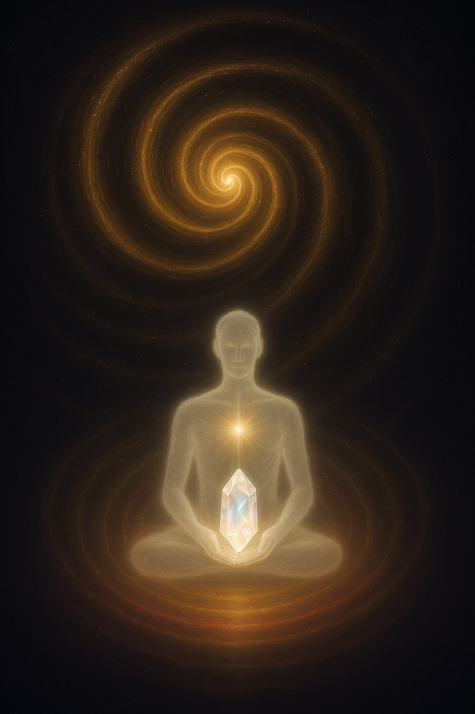

← Portale dön
5. Katman – Teslimiyet: Danburite ile Merkez
Merkeze ışıkla açılış, zarif teslimiyet.

Işık merkezde toplanır; kalbin dinginliğinde, teslimiyet zarifçe köklenir.
●
Sesli Fısıltı
PDF’yi Görüntüle
ZIP Paketi